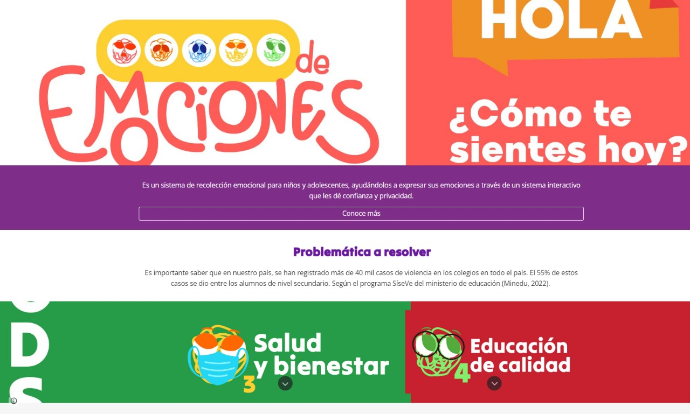

Semana 13

Clase presencial
En el inicio de la clase, el profesor Oscar nos sumergió en el tema de la realidad aumentada y virtual. De manera clara, nos explicó las diferencias fundamentales entre ambas y nos mostró cómo podríamos aplicarlas en nuestro campo. Nos dijo que, gracias a esta tecnología, podríamos ver cómo quedarían los productos en casa antes de comprarlos, algo así como lo que hace Ikea. También nos habló de juegos como Pokemon GO. Después, exploramos cómo la publicidad aprovecha estas ideas, usando estrategias que hacen que entendamos mejor y nos interesemos más en los productos.
Durante la clase, fue muy interesante como los demás grupos avanzaban con sus proyectos, algunos más que otros. Nuestro docente nos invitó a pasar al frente y mostrar nuestros avances por grupos y abrió paso a que los demás equipos den su feedback. En nuestro grupo cada integrante expuso una parte del proyecto: Mafer > la programación, Brenda > El estudio del color, Alexis > El esquema de flujo y mejoras potenciales del producto, Kenneth > Explicó como nuestro producto puede escalar en el mercado educativo primario, mediante una entrevista, y por mi parte > el diseño del producto en 3D y como se vería nuestro producto final.

Clase virtual
En esta clase, la dinámica se parecía mucho a la anterior, pero esta vez con la presentación de nuestras páginas web de proyecto. Cada equipo tenía la tarea de proyectar su propio trabajo, eligiendo a un representante para proporcionar explicaciones detalladas. Además, se fomentó brindar retroalimentación constante para resaltar y mejorar la parte esencial: el prototipo. El profesor Oscar contribuyó a nuestro proceso, proporcionándonos enlaces de proyectos de ciclos anteriores. Estos enlaces sirvieron como guía para la estructuración de las diferentes secciones de nuestras páginas web.